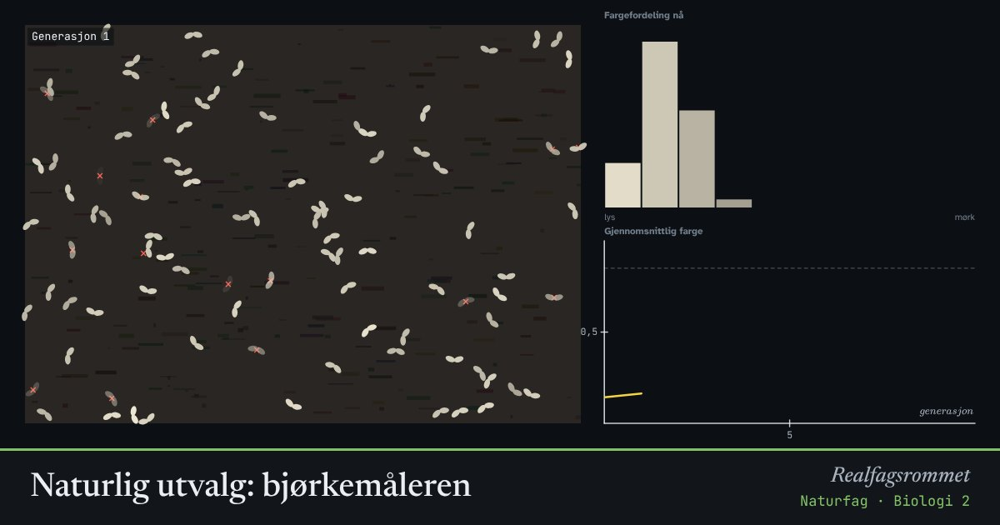

Naturlig utvalg: bjørkemåleren
Sommerfuglene varierer i farge, og fargen arves. Fuglene ser lettest de som skiller seg ut fra barken. Over mange generasjoner endrer hele bestanden farge.
Start animasjonen
Formler
Om animasjonen
Under den industrielle revolusjonen i England ble trærne svarte av sot. Lyse bjørkemålere ble lett funnet av fugler, og på noen tiår ble de fleste mørke. Da lufta ble renere, snudde utviklingen.
Hver generasjon blir noen spist. De overlevende får avkom som ligner dem, med litt tilfeldig variasjon fra mutasjoner.
Uten variasjon har ikke seleksjonen noe å virke på. Sett variasjonen til 0 og se hva som skjer.
Prøv dette
- Hvor mange generasjoner tar det før bestanden er mørk på mørk bark?
- Bytt tilbake til lys bark. Går endringen like fort tilbake?
- Hva skjer hvis fuglene ikke ser forskjell (0)? Forklar.
- Gi et annet eksempel på naturlig utvalg som skjer i dag.
Kompetansemål
- Naturfag: DNA, arv og evolusjon
- Biologi 2: Evolusjon i genlageret og artsdannelse